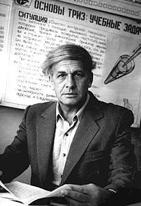

Recall that you considered several familiar Objects in the earlier module on Problems and Contradictions. And also considered a few sample Situations to find Administrative Contradictions in them.
We used the method of:
Now that we know how problems can be stated as simple Administrative Contradictions (AC), we need to take the next step and make what TRIZ calls Technical Contradictions (TC) and Physical Contradictions (PC). To do this, we will use a set of metaphoric phrases that are an integral part of (classical) TRIZ. These metaphoric phrases are simple enough and provide rich troves for imaginative problem solving.
Before we study this TRIZ Contradiction Language however, we need to obtain a quick understanding of its history.

The creator of TRIZ, Genrich Altshuller, was born in Russia in 1926, made his first invention at age 14 (9th Grade), and was later educated as a mechanical engineer. At the time he started working on TRIZ, in 1946, he was employed in the patent department of the Soviet navy, assisting inventors in filing their patents, in Baku, Azerbaijan.
While there he became intrigued by the question of how an invention happens:
Is it a matter of luck? The result of a mental “light bulb” turning on, as in the comics? Or can inventions be seen as the result of systematic patterns of inventive thinking?
Altshuller adopted an empirical approach to answering this question. He studied thousands of patents, looking for commonalities, repetitive patterns, and principles of inventive thought. As he found them he codified and documented them, as shown below. His results, when eventually published, attracted many enthusiasts who continued and expanded the work over the years, reviewing what is now estimated to be more than two million patents worldwide.

Level 1: Apparent Solution. This level requires no real invention; it consists of minor adaptations of existing concepts. Simple improvement of a technical system. They require knowledge available within an industry relevant to that system.
Level 2: Improvement. This level makes small improvements to existing approaches. Inventions include the resolution of a technical contradiction(TC). They require knowledge from different areas within an industry relevant to the system.
Level 3: Invention Inside the Paradigm. This level uses methods from other fields and improves previous approaches. This is an invention containing a resolution of a physical contradiction(PC). It requires knowledge from other industries.
Levels #2 & #3 solve contradictions and therefore are innovative by definition. About 77% of all patent applications were in this category.
Level 4. Invention Outside the Paradigm. This level involves a new design that is based on modifications of existing principles but in a manner not previously used. This level involves development a new technology. It is developed by using breakthrough solutions that requires knowledge from different fields of science. This fourth level also improves upon a technical system, but without solving an existing technical problem. Instead, it improves the function by replacing the original technology with a new technology. For example a mechanical system is replaced with a chemical system to perform the function.
Level 5: Discovery. This is the highest invention level. It consists of completely new concepts using new principles, and involves the discovery of new phenomena, or new science. The new phenomenon is discovered that allows pushing the existing technology to a higher level.
Altshuller concluded from his research that a large number of patents (77%) belong only to Levels #1 and #2. The practical utilization of TRIZ methodology can help inventors elevate their innovative solutions to Levels #3 and #4. As a result of this work, hundreds of technical papers and many books on TRIZ have been published, including 14 books by Altshuller himself.
TRIZ is actively used in Companies such as Boeing, Bridgestone, Eastman Kodak, Ford Motor Company, Harley-Davidson Motor Company, Hewlett-Packard, Illinois Tool Works, Inficon, Ingersoll Rand, Kimberly-Clark, L.G. Electronics, Lucent Technologies, Michelin, National Semiconductor, NASA, Philips, Rolls-Royce, Samsung, Siemens, Western Digital, and Xerox among others.
Altshuller made two more discoveries (at least!) based on his study of Soviet Patents:
That when the the problems solved in the patents were expressed as Contradictions, there were only a few standard phrases using which these Contradictions could be constructed. These were an astonishingly small 48 in number!! Every problem could be described as a contradiction using some pair of these 48 parameters. We will call these the 48 TRIZ Parameters1.
When the solutions in the Patents were examined, they could all be expressed simply as one of 40 abstract nouns or phrases. Just…40! We will call these the 40 TRIZ Inventive Principles
Some examples:
Weight of an stationary Object, Loss of Substance, and Temperature.Asymmetry, Parameter Change and The Other Way Around.So the task is:
TC Examples:

PC Examples:
Landing gear must be present on an airplane in order to land and takeoff. It should not be present during flight because of an increase in air drag. The physical contradiction is that the landing gear must be both present and absent. This contradiction is resolved by separating the requirements in time — make the landing gear retractable.
For high water diving, water must be “hard” to support the diver and “soft” so as not to injure the diver. The physical contradiction: The water must be hard and soft at the same time. This contradiction is resolved by separating the requirements in space: Saturate the water with air bubbles — the pool contains both air and water.
… an inherent contradiction in takeout pizza products. The customer wants the pizza to be hot, but hot pizza gives off steam. As a result, the cardboard box lid absorbs the steam, softens, and collapses down on the pizza. When the customer lifts the lid of the pizza box after arriving home, some of the pizza, which has stuck to the lid, attaches to the raised lid and the customer is not pleased because a significant amount of the cheese that he paid for is not edible. We want the pizza to be hot for one reason (an enjoyable pizza) and we want it to be cold for another (preventing the lid from becoming soggy and collapsing due to steam and water absorption). The little plastic tripod that is in the center of many takeout pizzas was the subject of the talk I heard. Such a simple invention! It resolves the contradiction of the pizza being hot and cold at the same time. (Jack Hipple, The Ideal Result)
Here is Albert Einstein speaking on The Language of Science. The transcript is here. PDF.
One quote from this short reading seems very appropriate here:
“The super-national character of scientific concepts and scientific language is due to the fact that they have been set up by the best brains of all countries and all times. In solitude, and yet in cooperative effort as regards the final effect, they created the spiritual tools for the technical revolutions which have transformed the life of mankind in the last centuries. Their system of concepts has served as a guide in the bewildering chaos of perceptions so that we learned to grasp general truths from particular observations.”
{{% youtube "iEtQ-gQ0Bq8" %}}
Valeri Souchkov, Differentiating Among the Five Levels of Solutions
Valeri Souchkov, “How to Define a Contradiction” and PDF
Open Source TRIZ: TRIZ Power Tools: Formulating Contradictions
Classical TRIZ started off with 39 Inventive Parameters. In recent years, the parameters have been increased to 48, after a study of an ever-increasing body of patent literature.↩︎